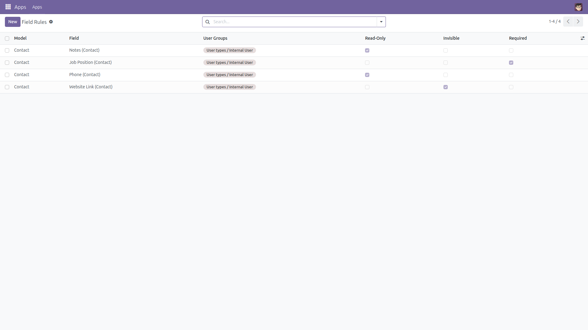
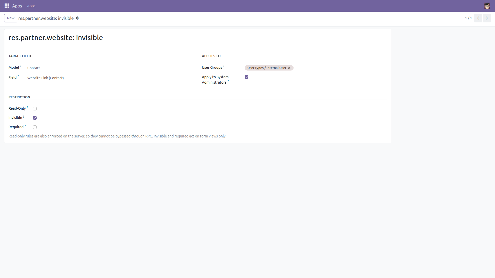
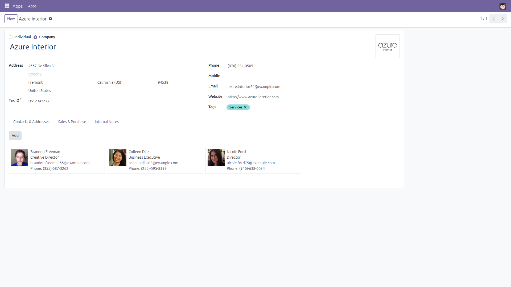
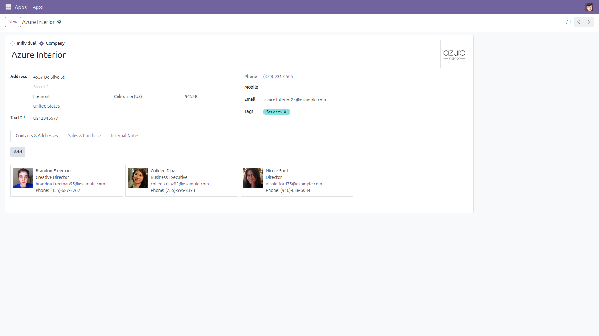

Make any field read-only, invisible or required per user group — no Studio, no custom code.
Every Odoo project hits the same requests: "this field must be read-only for regular users", "tidy this form for that team", "make the reference mandatory for accounting". Out of the box that means editing XML views or paying for Studio. This module adds a simple rule table instead: pick a model, pick a field, pick the user groups, tick the restriction. Done.
base only, no new mandatory
workflow, uninstall and every form is back to normal.
All rules in one list: model, field, user groups and the three restriction flags.

One rule: hide the website link from internal users — and, because this one opts in, even from administrators.

Before: the contact form as Odoo ships it — Website visible, Phone editable.

After two rules: the Website line is gone and Phone is locked — the same write is also refused server-side.
base.Questions or suggestions?
Write to f.ashraf.dev1@gmail.com — happy to help.